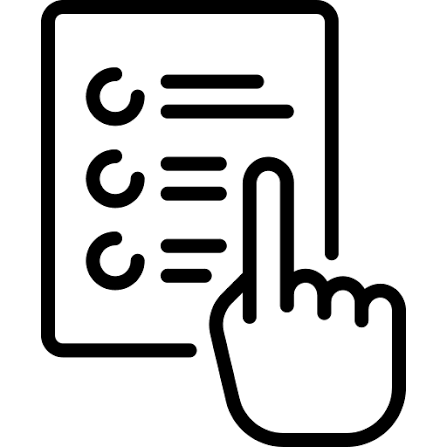
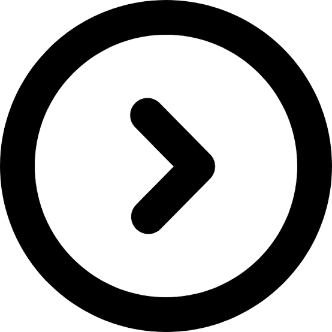

Bem-vindo ao meu Portfólio
Este site foi desenvolvido para apresentar os trabalhos práticos elaborados na disciplina de Design de Interação. Aqui serão disponibilizados os exercícios e projetos desenvolvidos ao longo do semestre.

Trabalho 1: Editor de MenusAplicação em JavaScript para manipulação do DOM e CSS em tempo real, permitindo a customização visual de menus.
Prova de múltipla escolha feita como web component, com as questões guardadas em um objeto JSON e correção automática.

Próximos TrabalhosOs trabalhos futuros desenvolvidos durante as aulas serão adicionados sequencialmente a este portal.